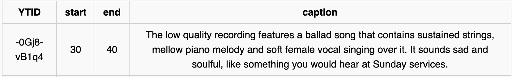
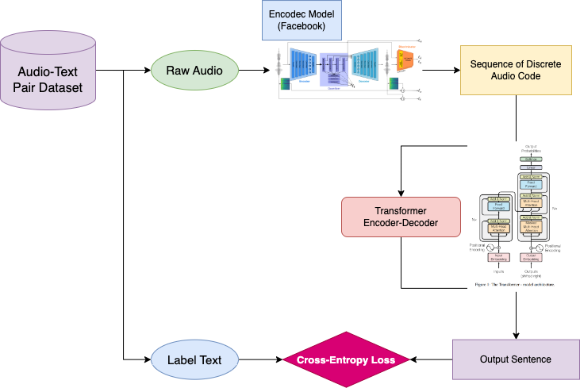
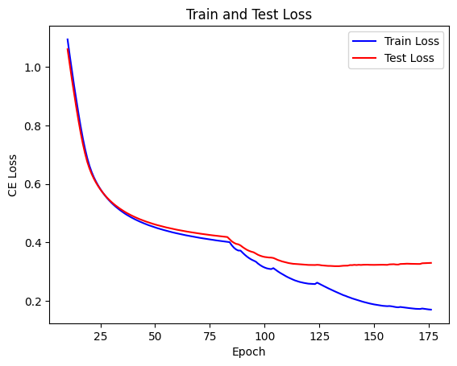

This project was an intermediate step for solving a problem that arose while trying to generate theme songs for professional League of Legends players.
Github : https://github.com/ongdyub/Music-To-Text-Description-Model
Let's create a song that can represent a player!
What metric should define whether a song represents a player?
Use the champions played by the player as the representative signal.
How can the proper noun "champion" be used for Music Generation?
Since it is a proper noun, focus on the unique characteristics of each champion.
Images have multiple skins, so instead use the champion's official theme song, which usually exists as a single canonical source.
How can a champion's theme song be applied to Music Generation?
Check the input and output API formats of facebook/MusicGen, the model used for generation.
There are three types: Text Condition Gen, Audio Condition Gen, and Melody Condition Gen.
But how should the description be created?
Develop a model that automatically generates a description when music is provided as input.
Pytorch, Huggingface, Colab
Dataset
Used the Music Theme dataset from AudioSet and the MusicCaps dataset.
AudioSet provided about 15k ytid-start-end-description pairs, and MusicCaps provided about 5.5k samples. Each raw audio clip was 10 seconds long.
I initially planned to use the full dataset for training, but due to Colab cost constraints poor undergraduate student, I used only 6k samples from the MusicCaps + AudioSet combination.
Example Dataset

Models
Audio Encoder candidates: AST, Wav2Vec2, Encodec, Hubert
Text Decoder Structure candidates: Plain Transformer, T5, LLaMa
Due to GPU cost constraints, I did not run full training. Instead, I checked train/test loss during the first 10 epochs to choose the combination. I also varied whether each component was pretrained or trained from scratch.
The final combination was
Encodec(Pre-Trained) + Plain-Transformer(From-Scratch)
Why?
Encodec is also the audio model actually used in MusicGen. The biggest difference from other audio encoders is that other encoders output tensors in the form [bsz, seq_len, hidden_dim], while Encodec uses a quantizer-based encoder-decoder structure and outputs audio-codebook-like tokens in the form [bsz, # of codebook, codebook_seq].
In terms of the input-output structure, this is the same as a text-to-text model in conventional NLP.

Since no evaluation metric exists for the Music-Description dataset, I used loss as the primary criterion.
The examples below show that the model produced reasonable outputs.
1 Input Audio
<audio controls> <source src="../assets/img/projects/proj-1/zeUEOxTd8IE.wav" type="audio/mpeg"> This song contains a digital drum playing a simple groove with a simple bassline. </audio>
This song contains a digital drum playing a simple groove with a simple bassline.
2 Input Audio
<audio controls> <source src="../assets/img/projects/proj-1/example2.mp3" type="audio/mpeg"> The low quality recording features a live performance of a folk song and it consists of groovy bass, shimmering hi hats, soft kick and harmonizing vocals, harmonizing vocals. It sounds energetic. </audio>
The low quality recording features a live performance of a folk song and it consists of groovy bass, shimmering hi hats, soft kick and harmonizing vocals, harmonizing vocals. It sounds energetic.
3 Input Audio
<audio controls> <source src="../assets/img/projects/proj-1/lqCx0HgF1ZM.wav" type="audio/mpeg"> This is a live performance of a folk music piece. It could be playing in the background at a coffee shop. </audio>
This is a live performance of a folk music piece. It could be playing in the background at a coffee shop.
4 Input Audio
<audio controls> <source src="../assets/img/projects/proj-1/OhZmxS5DUKU.wav" type="audio/mpeg"> This music is a contemporary instrumental. There is a a a male voice in the background. </audio>
This music is a contemporary instrumental. There is a a a male voice in the background.
5 Input Audio
<audio controls> <source src="../assets/img/projects/proj-1/4i1aizhCnfg.wav" type="audio/mpeg"> This song is a Christian gospel song. </audio>
This song is a Christian gospel song.
6 Input Audio
<audio controls> <source src="../assets/img/projects/proj-1/aDlWOvCdNMk.wav" type="audio/mpeg"> This music is instrumental. The tempo is slow with an electric guitar lead. </audio>
This music is instrumental. The tempo is slow with an electric guitar lead.
7 Input Audio
<audio controls> <source src="../assets/img/projects/proj-1/UfEGX0rNOvA.wav" type="audio/mpeg"> This is a pop music piece. It is an instrumental piece. There is an electronic drum beat in the rhythmic background. It could also be playing in the background at a dance course. </audio>
This is a pop music piece. It is an instrumental piece. There is an electronic drum beat in the rhythmic background. It could also be playing in the background at a dance course.
8 Input Audio
<audio controls> <source src="../assets/img/projects/proj-1/Ovk5EfFj7Ws.wav" type="audio/mpeg"> This song contains a digital drum playing a simple groove with a simple beat. </audio>
This song contains a digital drum playing a simple groove with a simple beat.
9 Input Audio
<audio controls> <source src="../assets/img/projects/proj-1/Mir959i7F2M.wav" type="audio/mpeg"> The song is an instrumental. The song is medium tempo with a modern pop dance tune and has poor audio quality. </audio>
The song is an instrumental. The song is medium tempo with a modern pop dance tune and has poor audio quality.
10 Input Audio
<audio controls> <source src="../assets/img/projects/proj-1/K6DSH7MSeOA.wav" type="audio/mpeg"> The tempo is slow with a Didgeridooo. </audio>
The tempo is slow with a Didgeridooo.
11 Input Audio
<audio controls> <source src="../assets/img/projects/proj-1/I4Jp0kB2Ns0.wav" type="audio/mpeg"> This song contains an acoustic guitar strumming chord progression. </audio>
This song contains an acoustic guitar strumming chord progression.
12 Input Audio
<audio controls> <source src="../assets/img/projects/proj-1/EwoCbcSXlSM-.wav" type="audio/mpeg"> The low quality recording features a live performance of a folk song and it consists of consists of a groovy bass, soft kick, shimmering hi hat. It sounds emotional and a bit a bit - like something you would hear in a bit a bit a bit noisy. </audio>
The low quality recording features a live performance of a folk song and it consists of consists of a groovy bass, soft kick, shimmering hi hat. It sounds emotional and a bit a bit - like something you would hear in a bit a bit a bit noisy.
13 Input Audio
<audio controls> <source src="../assets/img/projects/proj-1/example1.mp3" type="audio/mpeg"> This is a classical music piece. It could also be playing in the background at a coffee shop. </audio>
This is a classical music piece. It could also be playing in the background at a coffee shop.
